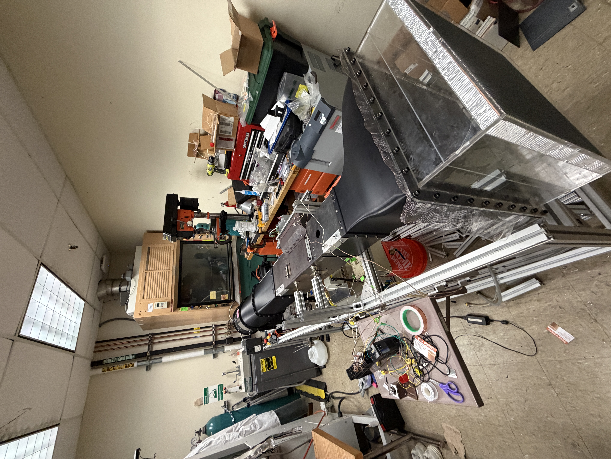

Low-speed wind tunnel
Fire spread is driven by heat transfer from burning materials to unignited fuel, making accurate heat-flux measurement essential to understanding fire behavior. Conventional heat-flux gauges, such as Schmidt–Boelter and Gardon gauges, require liquid cooling, and soot deposition can affect their readings. The Directional Flame Thermometer (DFT) offers an alternative that requires no active cooling and is suited to harsh fire environments. I helped design and build a low-speed wind tunnel to investigate how airflow influences heat transfer and DFT measurements, supporting research on fire spread and battery fires.
Design & contributions
Controlled airflow. Better understanding of heat transfer.
System integration
Integrated a contraction nozzle, test section, downstream ducting, and fan assembly on a structural frame to provide controlled airflow through the experimental region.
Contraction nozzle
Designed and fabricated a 3D-printed contraction nozzle, refining its connection to improve fit, alignment, and sealing.
Assembly & iteration
Created custom support brackets in SolidWorks to secure and align tunnel components, using 3D printing to iterate during assembly.
Finished Wind Tunnel
The assembled wind tunnel and a video demonstration.

The photo could not load. Please try again later.
The video could not load. Try opening it using the link below.